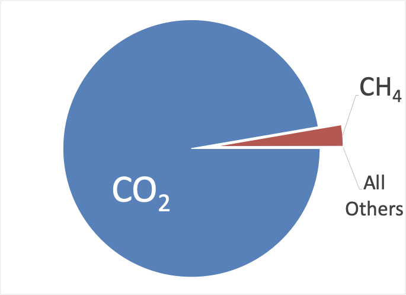

To my readers:
I’ve taken a break to contemplate what 2024 might hold and reconsidered my approach.
This serial has not broken through the noise as much as I’d hoped, possibly because the background noise is just too high these days—too many pundits speaking at once make it challenging to communicate a nuanced message. Nevertheless, writing has allowed me to hone my thoughts to a fine point.
I began with an earnest, educational bent, with the sincere expectation that engaging ordinary, intelligent people with the scientific process could promote more rational decisions by our political leaders. In particular, I hoped that others would appreciate the dedication of true scientists who work hard to explain the world around us. I firmly believe that the scientific approach is the only path for rational, practical problem-solving.
When I started, I asserted:
Science is a sport that wrestles truth from conjecture.
In retrospect, that assertion reflects an idealistic view of Science as a complement to Religion. But, over the past two centuries, Science has assumed a position as an alternative to Religion, where scientists have taken on the roles previously occupied by prophets and priests. Just as false prophets and pious charlatans have taken advantage of the faithful over the centuries, misguided modelers and heterodox scientists now seek to cash in without considering the bigger view. That doesn’t mean that all modelers are misguided or all scientists cannot be trusted, but it does mean that “trust the science” doesn’t mean “disconnect the brain.”
Significantly, apropos of “healing earth,” I’ve learned that there are two kinds of “climate denial.” The first and most transparent kind is the one that has gotten the most publicity: Rage-baiting by non-scientists who dispute the scientific consensus to stoke controversy where none exists. This is not helpful—denying a problem might attract wishful thinkers and social media followers, but it doesn’t make the problem magically disappear.
The second kind is more subtle, and it’s taken me some time to realize its full extent. Scientists (and the politicians who rely on them) deny what a practical solution must genuinely look like. Climate modelers (prophets, in the religious analogy) cannot predict with certainty and instead continue to add complexity without adding insight. Consequently, scientific experts (priests, in the religious analogy) develop partial solutions based on flawed models, giving politicians the illusion of options. In reality, there are very few.
A fundamental truth is this: Nothing else matters if we don’t do something AT SCALE about the carbon dioxide that has ALREADY BEEN EMITTED since the beginning of the Industrial Revolution. In a nutshell, here’s why:

Once released, methane (CH4) lasts about 12 years, but CO2 lasts a lot longer, between 300 and 1,000 years1. While the “global warming potential” of some long-lived gases (covered in the minuscule “all others” wedge) will be significant in the long run, we won’t have a “long-run” if we don’t do anything about CO2. And, given how long these gases last in the atmosphere, roughly half of the CO2 emitted at the beginning of the Industrial Revolution still has an impact today. For “decarbonization” alone to have an effect, we’d need to invent a time machine.
So, in 2024, I plan to spend more of my time advancing practical solutions for carbon capture, primarily focusing on methods that provide more fresh water for irrigation to enhance the natural process of photosynthetic carbon fixation on arid land. This newsletter will continue in a different format and cadence; over the next period, I will reprint a selection of my previous installments, one per day, with a lead comment summarizing what I discovered while writing it. I hope you’ll stick with me during these reruns, and I promise to return to a weekly format once they are finished. I believe revisiting the narrative’s evolution will be exceptionally healthy for productive discussions in the future. In addition, I will use the opportunity to broadcast the series more broadly to Threads, Facebook, and LinkedIn to recover lost opportunities to attract new readers.
I’d appreciate your help getting the message out, and if I can attract enough new paid subscribers, I’ll distribute some collectible swag accordingly. Yes, Substack tracks that sort of thing. Here’s a link to make it easy:
Thanks in advance, and Happy New Year!
I’ve chosen to count molecules because, based on the Second Law of Thermodynamics, it takes roughly the same amount of energy to concentrate and remove any specific gas molecule from the atmosphere as any other specific molecule. If we stop methane emissions today, it’ll be a few decades before the atmosphere adjusts naturally. If we stop CO2 emissions today, it’ll be a few millennia. That’s the problem.